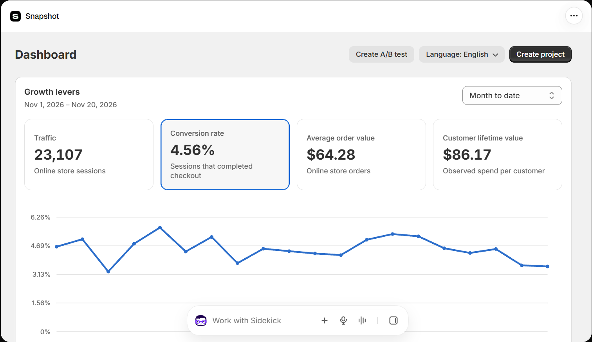

How To Build a CRO Program
Conversion optimization starts by tracking user behavior. That’s where you find the key to unlocking more sales from your existing traffic. Snapshot CRO is an analytics app built for Shopify stores who are ready to start AB testing but don’t know what to test.

What clients say…
“We were very excited and eager to see the results we could achieve from CRO. But we were surprised at how much our sales improved. Deeply appreciate the detail and help Shep brought to this experience.”
Dr. Ray NWFA · Portland, OR
“Our site is the best it’s ever been. Thanks for the hard work!”
Leo AT Fitness · Shanghai, CN
A few rules of thumb to get you started…
Don’t
-
Test a “good idea” randomly
There is nothing wrong with testing a hunch, but it needs to be part of a plan. A bunch of ad hoc tests pile up incoherently.
-
Copy a competitor’s site
What works on a competitor’s site may or may not work on yours, and if it doesn’t you might kill a good test because it didn’t match your audience in the same way.
-
Ignore the obvious
When you are getting feedback and know there is an issue, do that now. That is not an optimization, it’s a fix.
Do
-
Set your PACE
Understand the psychology of your customers at each stage of the buying cycle. It reveals gaps and holes, and presents opportunities quickly.
-
Check CVR by Channel
Different channels get different results because they get different types of people. See what is working by channel instead of looking for a one-size-fits-all approach.
-
Track behavior on PDP
If you don’t know what customers are doing and clicking on your site, you are missing the data you need for CRO. Gather it first. A lot of it.
Once you have this, conversion optimization starts to fall in place.
Get started with Snapshot
-
Step 1 · Site Snapshot
Prioritize which page needs CRO
Not all pages are created equally, and a sitewide snapshot will show you what each page is worth and which ones are worth your time.
-
Step 2 · Product Page Snapshot
Track Engagement & Behavior
There are dozens of elements on any given product page. Knowing where customers are looking for answers and cues shows you exactly what to do next.
-
Step 3
Experiment & Extrapolate
Test out your new hypotheses and implement the winners, and then take the learnings and test them across other pages and other parts of your marketing funnel.
Let’s use your store as an example
The best CRO advice and examples will give you a lot of info and ideas, but a live walkthrough of your own website will give you 10 times that. CRO is very relative to your industry and subjective to your audience.
Let’s take an hour to go through your funnel, your main product pages and templates, and come up with 3 experiments that will give you the best direction for optimizing your website for more conversions.